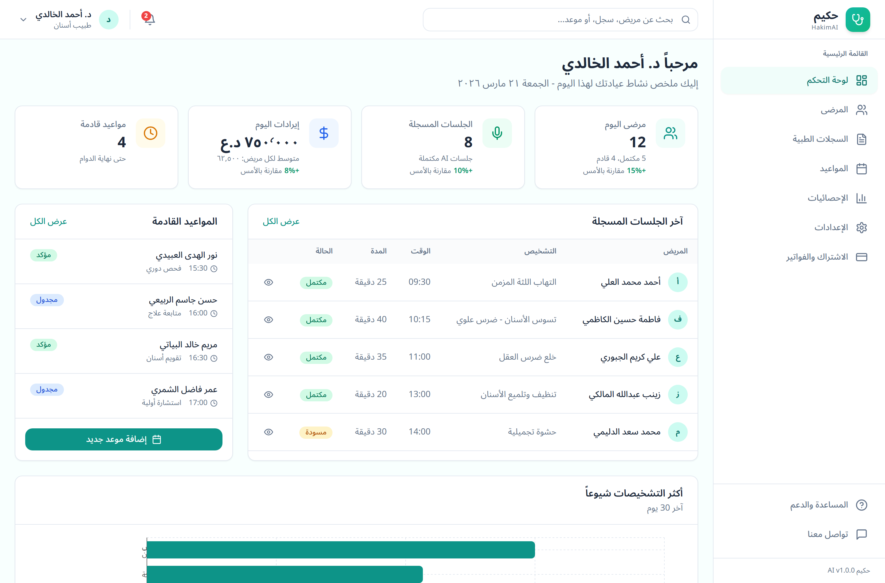
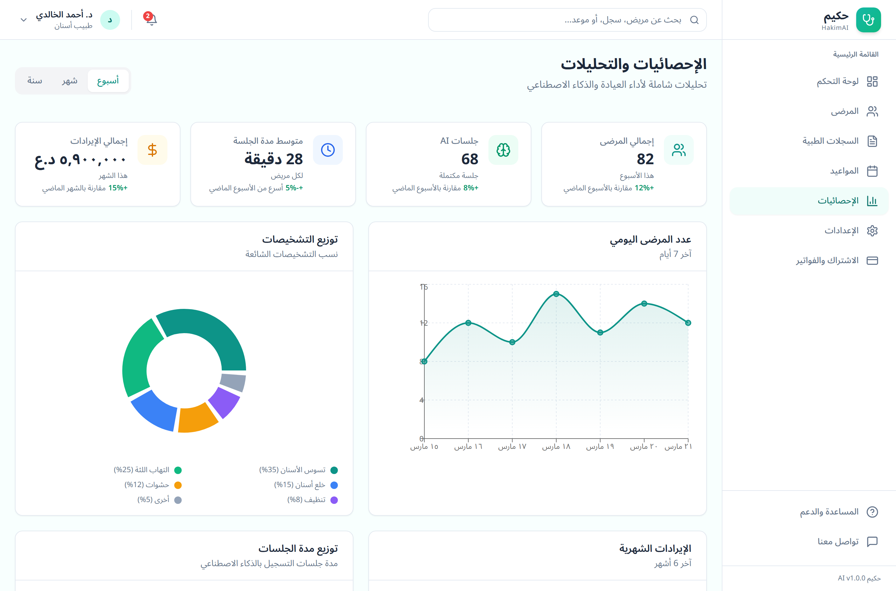
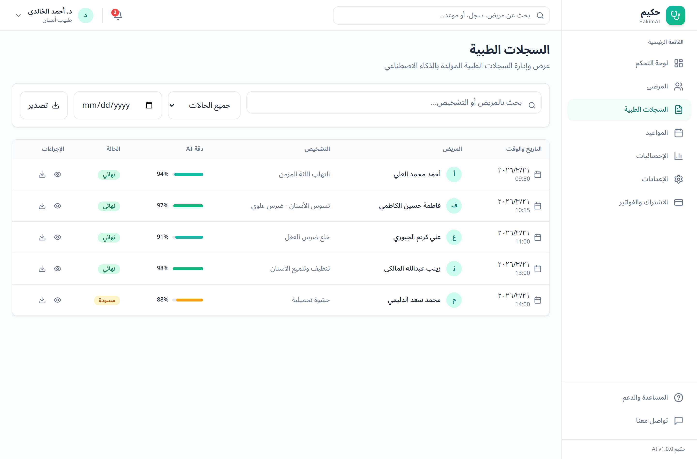
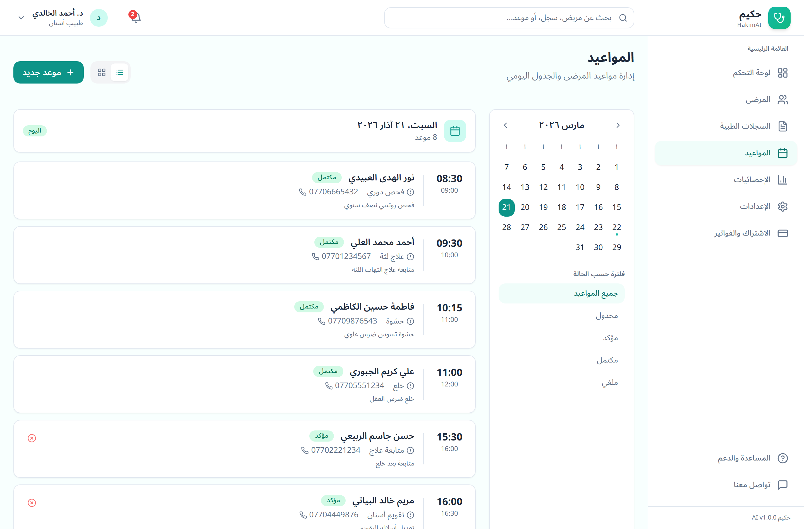

مُحرّر طبي يفهم اللهجة العراقية، مُوجَّه للأطباء في العراق — يحوّل حوار الطبيب والمريض المنطوق (لهجة عراقية) إلى توثيق سريري منظَّم (SOAP · تشخيص · ICD-10) لحظياً. A dialect-aware medical scribe for Iraqi clinicians — turns a spoken doctor-patient conversation (Iraqi dialect) into structured clinical documentation (SOAP, diagnosis, ICD-10) in real time.
يسجّل الطبيب الاستشارة داخل التطبيق، فيُرسَل الصوت مباشرةً إلى Google Gemini 2.5 Pro — دون أي خطوة تفريغ منفصلة (لا Whisper ولا محرّك ASR وسيط) — مرفقاً بتوجيهات (prompts) خاصة بالتخصّص وسياق المريض (التاريخ المرضي، الحساسيات، قائمة أدوية العيادة). Doctors record a consultation in the app; the audio is sent directly to Google Gemini 2.5 Pro — with no separate transcription step (no Whisper, no intermediate ASR engine) — along with specialty-specific prompts and patient context (history, allergies, clinic drug list).
يُعيد Gemini ردّاً منظَّماً بصيغة JSON: ملاحظات SOAP، تشخيص مع رموز ICD-10، ومستويات ثقة. ثم يشغّل الـ backend محرّك تفاعلات دوائية محلّياً مقابل قاعدة بيانات صيدلانية عراقية مُنسَّقة (~1000 سطر): جرعات حقيقية، موانع استعمال، تعديلات أطفال حسب الوزن، وعلامات للحمل. ويولّد وصفات PDF بإظهار سليم (RTL)، ويصدّر السجلات إلى FHIR R4 لتكامل أنظمة EHR في المستشفيات. ثم يراجع الطبيب ويعدّل ويوقّع ويعتمد. Gemini returns structured JSON: SOAP notes, diagnosis + ICD-10 codes, and confidence levels. The backend then runs a local drug-interaction engine against a curated ~1000-line Iraqi pharmaceutical database (real dosing, contraindications, weight-based pediatric adjustments, pregnancy flags). It generates PDF prescriptions with proper RTL rendering, and exports records to FHIR R4 for hospital EHR integration. The doctor then reviews, edits, signs, and finalizes.
* الـ backend والمعمارية هما الإنجاز الأساسي والجاهز؛ لوحة الويب لا تزال نماذج أولية ببيانات وهمية (انظر القسم 05). * The backend and architecture are the core, working achievement; the web dashboard is still a prototype on mock data (see section 05).
لقطات حقيقية من لوحة الويب (واجهة Next.js · بيانات تجريبية)Real screenshots of the web dashboard (Next.js UI · demo data)




backend async-first · 8 routers · معالجة صوت مباشرة عبر Gemini · بثّ لحظي بـ WebSocketAsync-first backend · 8 routers · direct audio via Gemini · real-time WebSocket streaming
// clients → JWT REST + WebSocket → FastAPI → data + AI layer CLIENTS ├─ Flutter (mobile + desktop) ┐ └─ Next.js (web dashboard) ├── JWT REST + WebSocket (live transcript) ┘ │ ▼ FastAPI (async, 8 routers) auth · sessions · patients · records prescriptions · appointments · analytics · FHIR │ ├─▶ Gemini 2.5 API audio → structured JSON (SOAP · ICD-10) │ NO Whisper / no separate ASR step ├─▶ PostgreSQL 16 SQLAlchemy 2.0 async · asyncpg ├─▶ Redis + Celery audio / reports / reminders queues └─▶ MinIO S3-compatible audio storage Celery Beat (scheduled, idempotent + fault-isolated) • hourly → appointment reminders • daily 1am → clinic reports
يُرسِل الصوت الخام إلى Gemini مع سياق المريض ويتلقّى JSON منظَّماً مباشرة — ما يلغي زمن وتكلفة مرحلة ASR وسيطة ويتجنّب طبقة نصّية فاقدة للمعلومة في اللهجة العراقية.Sends raw audio to Gemini with patient context and receives structured JSON directly — eliminating the latency and cost of an intermediate ASR stage and avoiding a lossy text layer for Iraqi dialect.
قاعدة أدوية عراقية مُنسَّقة (~1000 سطر): تفاعلات (مثل Warfarin+Amoxicillin)، موانع استعمال، وجرعات أطفال حسب الوزن — لا تعتمد على الـ LLM، فهي عديمة الحالة وحتمية وقابلة للتدقيق.A curated ~1000-line Iraqi drug DB: interactions (e.g. Warfarin+Amoxicillin), contraindications, and weight-based pediatric dosing — NOT relying on the LLM, so it's stateless, deterministic, and auditable.
SQLAlchemy 2.0 async + asyncpg، وكل endpoint غير متزامن — ما يتيح التوسّع الأفقي.SQLAlchemy 2.0 async + asyncpg, every endpoint async — so it scales horizontally.
موارد متوافقة مع HL7 — Patient / Condition / Medication / Observation — لتكامل أنظمة السجلات الصحية الإلكترونية (EHR) في المستشفيات.HL7-compliant Patient / Condition / Medication / Observation resources for hospital EHR integration.
JWT مع تدوير رموز التحديث (refresh rotation)، مصادقة ثنائية TOTP، صلاحيات حسب الدور (طبيب/موظف استقبال/مدير)، سجل تدقيق في قاعدة البيانات، تعقيم المدخلات، تحديد معدّل على endpoints الذكاء الاصطناعي، وحماية من هجمات التخمين.JWT with refresh-token rotation, TOTP 2FA, role-based access (doctor/receptionist/admin), a database audit log, input sanitization, rate limiting on AI endpoints, and brute-force protection.
97 اختباراً تعمل على SQLite في الذاكرة مع محاكاة Gemini وS3 (conftest يرقّع أنواع PostgreSQL) — سريعة وملائمة للـ CI.97 tests run on in-memory SQLite with mocked Gemini and S3 (conftest patches PostgreSQL types) — fast and CI-friendly.
| الإطارFramework | FastAPI 0.115 · Python 3.11 · Pydantic v2 |
| قاعدة البياناتDatabase | PostgreSQL 16 · SQLAlchemy 2.0 (غير متزامن)(async) · Alembic |
| المعالجة غير المتزامنة / الطوابيرAsync / Queue | Redis 7 · Celery 5.4 (طوابير الصوت/التقارير/التذكيرات)(audio/reports/reminders queues) · Celery Beat |
| التخزينStorage | MinIO (متوافق مع S3)(S3-compatible) |
| الذكاء الاصطناعيAI | Google Gemini 2.5 (Pro/Flash) — معالجة صوت مباشرةdirect audio processing |
| الأمانSecurity | JWT + refresh rotation · TOTP 2FA · bcrypt · سجل تدقيق · تحديد معدّلaudit log · rate limiting |
| PDF / RTLPDF / RTL | reportlab · arabic-reshaper · python-bidi (RTL) |
| موبايل / سطح المكتبMobile / Desktop | Flutter (Riverpod · dio · record · window_manager) |
| الويبWeb | Next.js 14 · React 18 · Tailwind · Recharts |
| DevOps | Docker · Caddy (TLS تلقائي)(auto-TLS) · Sentry/Prometheus/Grafana (اختياري)(optional) |